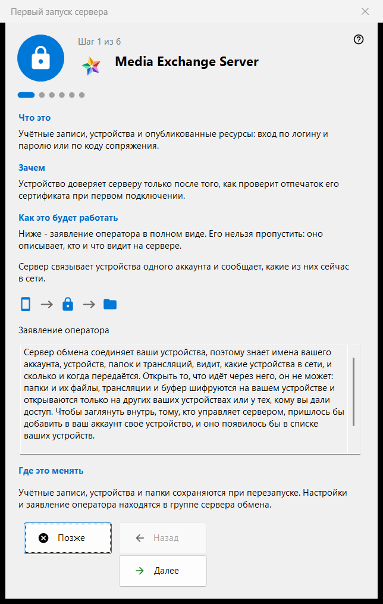
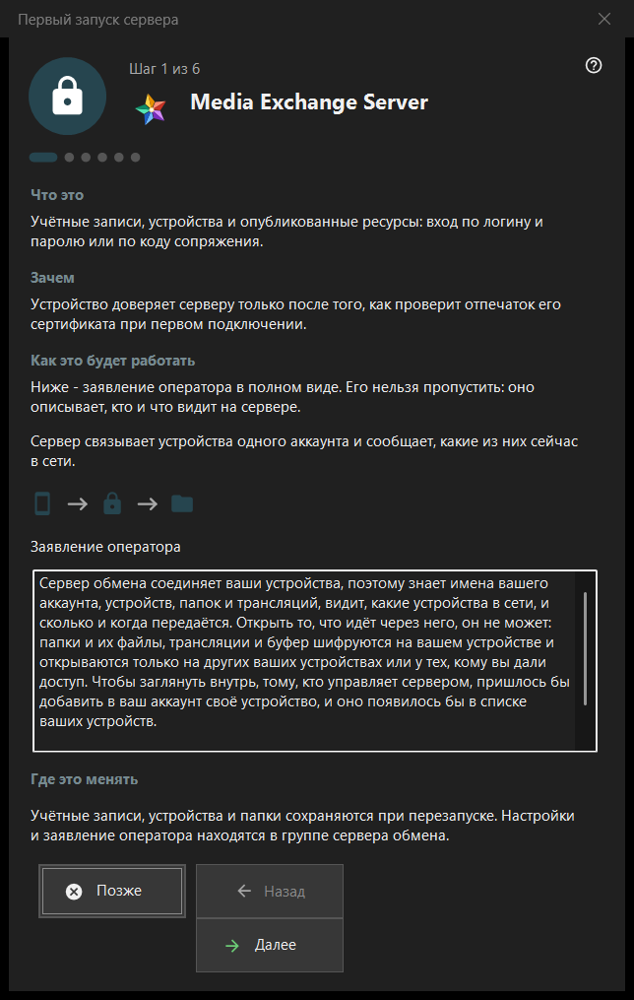

Первый запуск сервера
Назначение
Первый запуск группы сервера обмена в Share Manager. Мастер объясняет, чем становится компьютер, показывает заявление оператора, задаёт порты, адрес для клиентов и первую учётную запись и заканчивается состоянием сервера. Он открывается, только когда сервер обмена установлен и включён.


Порядок действий
- Прочитайте заявление оператора на первой странице.
- Проверьте порты и правило брандмауэра.
- В серверной редакции без службы решите, нужна ли служба Windows.
- Заполните адрес для клиентов.
- Создайте первую учётную запись.
- Сверьте отпечаток сертификата и нажмите «Готово».
Элементы окна
Страницы и кнопки
В нижней строке написано «Шаг N из M»; «Назад», «Далее» и «Позже» работают как в любом мастере, а «Готово» на последней странице открывает группу сервера обмена в менеджере. Страницу можно пропустить без изменений: сервер тогда остаётся выключенным или таким, каким был.
Заявление оператора
Полный текст заявления о том, кто и что видит на сервере. Его нельзя пропустить. Сервер связывает устройства одной учётной записи и сообщает, какие из них сейчас в сети.
Порты и брандмауэр
Порт встречи устройств и диапазон портов для сторонних клиентов. Устройства должны знать порт сервера, поэтому изменения касаются только новых кодов. Правило брандмауэра относится к программе, так что смена порта нового правила не требует. Эти значения хранятся в группе сервера обмена.
Служба Windows
Страница показывается только в серверной редакции, где службы ещё нет. Служба держит сервер доступным, когда никто не вошёл в систему. Галочка лишь запоминает согласие: служба регистрируется после создания первой учётной записи с одним запросом прав, до этого ничего не устанавливается. Позже то же делает кнопка «Зарегистрировать как службу..» в группе обмена.
Адрес для клиентов
«Адрес для клиентов (хост:порт):» - это то, по чему другие устройства находят этот компьютер. «Предложить локальный адрес» заполняет поле только по нажатию. Пустой адрес оставляет локальный первый запуск допустимым, но скрывает трансляции и подключения к папкам для других устройств.
Первая учётная запись
Учётная запись, с которой войдёт первое устройство. Выберите «Создать пароль автоматически» или «Ввести свой пароль»; «Подключить этот компьютер к аккаунту» присоединяет к ней этот компьютер. «Далее» создаёт аккаунт, запускает сервер и проверяет сертификат. Пароль показывается один раз в существующем окне и не сохраняется на этом компьютере. Сбой после создания аккаунта его не удаляет.
Сервер готов
Последняя страница указывает, где записаны адрес, логин и отпечаток сертификата, и предлагает «Скопировать отпечаток» и «Строка подключения и QR-код..». Устройство доверяет серверу после проверки отпечатка при первом подключении. Ссылки «Подключить телефон (справка)» и «Опубликовать первую папку (справка)» ведут на соответствующие страницы справки.
Настройки менеджера · Настройки общего доступа SFTP · Настройки сервера обмена